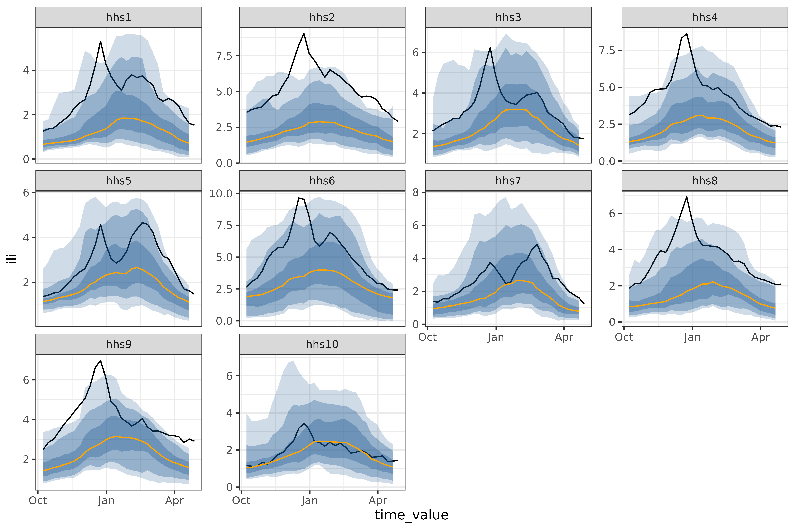

Introduction
At a high level, the goal of epipredict is to make it easy to run simple machine learning and statistical forecasters for epidemiological data. To do this, we have extended the tidymodels framework to handle the case of panel time-series data.
Our hope is that it is easy for users with epidemiological training and some statistical knowledge to estimate baseline models, while also allowing those with more nuanced statistical understanding to create complex custom models using the same framework. Towards that end, epipredict provides two main classes of tools:
Canned forecasters
A set of basic, easy-to-use “canned” forecasters that work out of the box. We currently provide the following basic forecasters:
-
flatline_forecaster(): predicts as the median the most recently seen value with increasingly wide quantiles. -
climatological_forecaster(): predicts the median and quantiles based on the historical values around the same date in previous years. -
arx_forecaster(): an AutoRegressive eXogenous feature forecaster, which estimates a model (e.g. linear regression) on lagged data to predict quantiles for continuous values. -
arx_classifier(): fits a model (e.g. logistic regression) on lagged data to predict a binned version of the growth rate. -
cdc_baseline_forecaster(): a variant of the flatline forecaster that is used as a baseline in the CDC’s FluSight forecasting competition.
Forecasting framework
A framework for creating custom forecasters out of modular components, from which the canned forecasters were created. There are three types of components:
-
Preprocessor: transform the data before model training,
such as converting counts to rates, creating smoothed columns, or any
{recipes}step -
Trainer: train a model on data, resulting in a fitted model
object. Examples include linear regression, quantile regression, or any
{parsnip}engine. -
Postprocessor: unique to epipredict; used to
transform the predictions after the model has been fit, such as
- generating quantiles from purely point-prediction models,
- reverting operations done in the
steps, such as converting from rates back to counts - generally adapting the format of the prediction to its eventual use.
The rest of this “Get Started” vignette will focus on using and modifying the canned forecasters. Check out the Custom Epiworkflows vignette for examples of using the forecaster framework to make more complex, custom forecasters.
If you are interested in time series in a non-panel data context, you may also want to look at timetk and modeltime for some related techniques.
For a more in-depth treatment with some practical applications, see also the Forecasting Book.
Panel forecasting basics
This section gives basic usage examples for the package beyond the
most basic usage of arx_forecaster() for forecasting a
single ahead using the default engine. Before we start actually building
forecasters, lets import some relevant libraries
library(dplyr)
library(parsnip)
library(workflows)
library(recipes)
library(epidatasets)
library(epipredict)
library(epiprocess)
library(ggplot2)
library(purrr)
library(epidatr)And our default forecasting date and selected states (we will use these to limit the data to make discussion easier):
Example data
The forecasting methods in this package are designed to work with
panel time series data in epi_df format as made available
in the epiprocess package. An epi_df is a
collection of one or more time-series indexed by one or more categorical
variables. The {epidatasets}
package makes several pre-compiled example datasets available. Let’s
look at an example epi_df:
covid_case_death_rates
#> An `epi_df` object, 20,496 x 4 with metadata:
#> * geo_type = state
#> * time_type = day
#> * as_of = 2023-03-10
#>
#> # A tibble: 20,496 × 4
#> geo_value time_value case_rate death_rate
#> * <chr> <date> <dbl> <dbl>
#> 1 ak 2020-12-31 35.9 0.158
#> 2 al 2020-12-31 65.1 0.438
#> 3 ar 2020-12-31 66.0 1.27
#> 4 as 2020-12-31 0 0
#> 5 az 2020-12-31 76.8 1.10
#> 6 ca 2020-12-31 95.9 0.755
#> # ℹ 20,490 more rowsAn epi_df always has a geo_value and a
time_value as keys, along with some number of value
columns, in this case case_rate and
death_rate. Each of these has an associated
geo_type (state) and time_type (day), for
which there are some utilities. While this geo_value and
time_value are the minimal set of keys, the functions of
epiprocess and epipredict are designed to
accommodate other key values, such as age, ethnicity, or other
demographic information. For example, grad_employ_subset
from epidatasets also has both age_group and
edu_qual as additional keys:
grad_employ_subset
#> An `epi_df` object, 1,445 x 7 with metadata:
#> * geo_type = custom
#> * time_type = integer
#> * other_keys = age_group, edu_qual
#> * as_of = 2024-09-18
#>
#> # A tibble: 1,445 × 7
#> geo_value age_group edu_qual time_value num_graduates
#> * <chr> <fct> <fct> <int> <dbl>
#> 1 Newfoundland and L… 15 to 34 years Career, techni… 2010 430
#> 2 Newfoundland and L… 35 to 64 years Career, techni… 2010 140
#> 3 Newfoundland and L… 15 to 34 years Career, techni… 2010 630
#> 4 Newfoundland and L… 35 to 64 years Career, techni… 2010 140
#> 5 Newfoundland and L… 15 to 34 years Other career, … 2010 60
#> 6 Newfoundland and L… 35 to 64 years Other career, … 2010 40
#> # ℹ 1,439 more rows
#> # ℹ 2 more variables: med_income_2y <dbl>, med_income_5y <dbl>See epiprocess for more
details on the epi_df format.
Panel time series are ubiquitous in epidemiology, but are also common in economics, psychology, sociology, and many other areas. While this package was designed with epidemiology in mind, many of the techniques are more broadly applicable.
Customizing arx_forecaster()
Let’s expand on the basic example presented on the landing page, starting with
adjusting some parameters in arx_forecaster().
The trainer argument allows us to set the computational
engine. We can use either one of the relevant parsnip models, or
one of the included engines, such as
smooth_quantile_reg():
two_week_ahead <- arx_forecaster(
covid_case_death_rates |> filter(time_value <= forecast_date),
outcome = "death_rate",
trainer = quantile_reg(),
predictors = c("death_rate"),
args_list = arx_args_list(
lags = list(c(0, 7, 14)),
ahead = 14
)
)
hardhat::extract_fit_engine(two_week_ahead$epi_workflow)
#> Call:
#> quantreg::rq(formula = ..y ~ ., tau = ~c(0.05, 0.1, 0.25, 0.5,
#> 0.75, 0.9, 0.95), data = data, na.action = stats::na.omit, method = ~"br",
#> model = FALSE)
#>
#> Coefficients:
#> tau= 0.05 tau= 0.10 tau= 0.25 tau= 0.50 tau= 0.75
#> (Intercept) -0.004873168 0.00000000 0.0000000 0.01867752 0.03708118
#> lag_0_death_rate 0.084091001 0.15180503 0.3076742 0.51165423 0.59058733
#> lag_7_death_rate 0.049478502 0.08493916 0.1232253 0.10018481 0.18480536
#> lag_14_death_rate 0.072304151 0.08554334 0.0712085 0.04088075 0.02609046
#> tau= 0.90 tau= 0.95
#> (Intercept) 0.07234641 0.1092061
#> lag_0_death_rate 0.59001978 0.5249616
#> lag_7_death_rate 0.33236190 0.4250353
#> lag_14_death_rate 0.03695928 0.1783820
#>
#> Degrees of freedom: 10416 total; 10412 residualThe default trainer is parsnip::linear_reg(), which
generates quantiles after the fact in the post-processing layers, rather
than as part of the model. While these post-processing layers will
produce prediction intervals for an arbitrary trainer, it is generally
preferable to use quantile_reg() (or an alternative that
produces statistically justifiable prediction intervals), as the
quantiles generated in post-processing can be poorly behaved.
quantile_reg() on the other hand directly estimates a
different linear model for each quantile, reflected in the several
different columns for tau above.
Because of the flexibility of parsnip, there are a whole host of models available to us1; as an example, we could have just as easily substituted a non-linear random forest model from ranger:
two_week_ahead <- arx_forecaster(
covid_case_death_rates |> filter(time_value <= forecast_date),
outcome = "death_rate",
trainer = rand_forest(mode = "regression"),
predictors = c("death_rate"),
args_list = arx_args_list(
lags = list(c(0, 7, 14)),
ahead = 14
)
)Other customization is possible via
args_list = arx_args_list(); for example, if we wanted to
increase the number of quantiles fit:
two_week_ahead <- arx_forecaster(
covid_case_death_rates |>
filter(time_value <= forecast_date, geo_value %in% used_locations),
outcome = "death_rate",
trainer = quantile_reg(),
predictors = c("death_rate"),
args_list = arx_args_list(
lags = list(c(0, 7, 14)),
ahead = 14,
############ changing quantile_levels ############
quantile_levels = c(0.05, 0.1, 0.2, 0.3, 0.5, 0.7, 0.8, 0.9, 0.95)
##################################################
)
)
hardhat::extract_fit_engine(two_week_ahead$epi_workflow)
#> Call:
#> quantreg::rq(formula = ..y ~ ., tau = ~c(0.05, 0.1, 0.2, 0.3,
#> 0.5, 0.7, 0.8, 0.9, 0.95), data = data, na.action = stats::na.omit,
#> method = ~"br", model = FALSE)
#>
#> Coefficients:
#> tau= 0.05 tau= 0.10 tau= 0.20 tau= 0.30
#> (Intercept) -0.01329758 -0.006999475 -0.003226356 0.0001366959
#> lag_0_death_rate 0.25217750 0.257695857 0.486159095 0.6986147165
#> lag_7_death_rate 0.17210286 0.212294203 0.114016289 0.0704290267
#> lag_14_death_rate 0.08880828 0.057022770 0.013800329 -0.0654254593
#> tau= 0.50 tau= 0.70 tau= 0.80 tau= 0.90
#> (Intercept) 0.004395352 0.008467922 0.005495554 0.01626215
#> lag_0_death_rate 0.751695727 0.767243828 0.743676651 0.60494554
#> lag_7_death_rate 0.208846644 0.347907095 0.460814061 0.61021640
#> lag_14_death_rate -0.164693162 -0.234886556 -0.236950849 -0.20670731
#> tau= 0.95
#> (Intercept) 0.03468154
#> lag_0_death_rate 0.59202848
#> lag_7_death_rate 0.64532803
#> lag_14_death_rate -0.18566431
#>
#> Degrees of freedom: 744 total; 740 residualSee the function documentation for arx_args_list() for
more examples of the modifications available. If you want to make
further modifications, you will need a custom workflow; see the Custom Epiworkflows vignette for
details.
Generating multiple aheads
We often want to generate a a trajectory of forecasts over a range of
dates, rather than for a single day. We can do this with
arx_forecaster() by looping over aheads. For example, to
predict every day over a 4-week time period:
all_canned_results <- lapply(
seq(0, 28),
\(days_ahead) {
arx_forecaster(
covid_case_death_rates |>
filter(time_value <= forecast_date, geo_value %in% used_locations),
outcome = "death_rate",
predictors = c("case_rate", "death_rate"),
trainer = quantile_reg(),
args_list = arx_args_list(
lags = list(c(0, 1, 2, 3, 7, 14), c(0, 7, 14)),
ahead = days_ahead
)
)
}
)
# pull out the workflow and the predictions to be able to
# effectively use autoplot
workflow <- all_canned_results[[1]]$epi_workflow
results <- all_canned_results |>
purrr::map(~ `$`(., "predictions")) |>
list_rbind()
autoplot(
object = workflow,
predictions = results,
observed_response = covid_case_death_rates |>
filter(geo_value %in% used_locations, time_value > "2021-07-01")
)Other canned forecasters
This section gives a brief example of each of the canned forecasters.
flatline_forecaster()
The simplest model we provide is the
flatline_forecaster(), which predicts a flat line (with
quantiles generated from the residuals using
layer_residual_quantiles()). For example, on the same
dataset as above:
all_flatlines <- lapply(
seq(0, 28),
\(days_ahead) {
flatline_forecaster(
covid_case_death_rates |>
filter(time_value <= forecast_date, geo_value %in% used_locations),
outcome = "death_rate",
args_list = flatline_args_list(
ahead = days_ahead,
)
)
}
)
# same plotting code as in the arx multi-ahead case
workflow <- all_flatlines[[1]]$epi_workflow
results <- all_flatlines |>
purrr::map(~ `$`(., "predictions")) |>
list_rbind()
autoplot(
object = workflow,
predictions = results,
observed_response = covid_case_death_rates |> filter(geo_value %in% used_locations, time_value > "2021-07-01")
)
cdc_baseline_forecaster()
This is a different method of generating a flatline forecast, used as a baseline for the CDC COVID-19 Forecasting Hub.
all_cdc_flatline <-
cdc_baseline_forecaster(
covid_case_death_rates |>
filter(time_value <= forecast_date, geo_value %in% used_locations),
outcome = "death_rate",
args_list = cdc_baseline_args_list(
aheads = 1:28,
data_frequency = "1 day"
)
)
# same plotting code as in the arx multi-ahead case
workflow <- all_cdc_flatline$epi_workflow
results <- all_cdc_flatline$predictions
autoplot(
object = workflow,
predictions = results,
observed_response = covid_case_death_rates |> filter(geo_value %in% used_locations, time_value > "2021-07-01")
)cdc_baseline_forecaster() and
flatline_forecaster() generate medians in the same way, but
cdc_baseline_forecaster()’s quantiles are generated using
layer_cdc_flatline_quantiles() instead of
layer_residual_quantiles(). Both quantile-generating
methods use the residuals to compute quantiles, but
layer_cdc_flatline_quantiles() extrapolates the quantiles
by repeatedly sampling the initial quantiles to generate the next set.
This results in much smoother quantiles, but ones that only capture the
one-ahead uncertainty.
climatological_forecaster()
The climatological_forecaster() is a different kind of
baseline. It produces a point forecast and quantiles based on the
historical values for a given time of year, rather than extrapolating
from recent values. Among our forecasters, it is the only one well
suited for forecasts at long time horizons.
Since it requires multiple years of data and a roughly seasonal signal, the dataset we’ve been using for demonstrations so far is poor example for a climate forecast2. Instead, we’ll use the fluview ILI dataset, which is weekly influenza like illness data for hhs regions, going back to 1997.
We’ll predict the 2023/24 season using all previous data, including
2020-2022, the two years where there was approximately no seasonal flu,
forecasting from the start of the season, 2023-10-08:
fluview_hhs <- pub_fluview(
regions = paste0("hhs", 1:10),
epiweeks = epirange(100001,222201)
)
fluview <- fluview_hhs %>%
select(
geo_value = region,
time_value = epiweek,
issue,
ili) %>%
as_epi_archive() %>%
epix_as_of_current()
#> inferring version column.
all_climate <- climatological_forecaster(
fluview %>% filter(time_value < "2023-10-08"),
outcome = "ili",
args_list = climate_args_list(
forecast_horizon = seq(0, 28),
time_type = "week",
quantile_by_key = "geo_value",
forecast_date = as.Date("2023-10-08")
)
)
workflow <- all_climate$epi_workflow
results <- all_climate$predictions
autoplot(
object = workflow,
predictions = results,
observed_response = fluview %>%
filter(time_value >= "2023-10-08", time_value < "2024-05-01") %>%
mutate(geo_value = factor(geo_value, levels = paste0("hhs", 1:10)))
)
One feature of the climatological baseline is that it forecasts
multiple aheads simultaneously; here we do so for the entire season of
28 weeks. This is possible for arx_forecaster(), but only
using trainer = smooth_quantile_reg(), which is built to
handle multiple aheads simultaneously3.
A pure climatological forecast can be thought of as forecasting a
typical year so far. The 2023/24 had some regions, such as
hhs10 which were quite close to the typical year, and some,
such as hhs2 that were frequently outside even the 90%
prediction band (the lightest shown above).
arx_classifier()
Unlike the other canned forecasters, arx_classifier
predicts binned growth rate. The forecaster converts the raw outcome
variable into a growth rate, which it then bins and predicts, using bin
thresholds provided by the user. For example, on the same dataset and
forecast_date as above, this model outputs:
classifier <- arx_classifier(
covid_case_death_rates |>
filter(geo_value %in% used_locations, time_value < forecast_date),
outcome = "death_rate",
predictors = c("death_rate", "case_rate"),
trainer = multinom_reg(),
args_list = arx_class_args_list(
lags = list(c(0, 1, 2, 3, 7, 14), c(0, 7, 14)),
ahead = 2 * 7,
breaks = 0.25 / 7
)
)
classifier$predictions
#> # A tibble: 4 × 4
#> geo_value .pred_class forecast_date target_date
#> <chr> <fct> <date> <date>
#> 1 ca (-Inf,0.0357] 2021-07-31 2021-08-14
#> 2 ma (-Inf,0.0357] 2021-07-31 2021-08-14
#> 3 ny (-Inf,0.0357] 2021-07-31 2021-08-14
#> 4 tx (-Inf,0.0357] 2021-07-31 2021-08-14The number and size of the growth rate categories is controlled by
breaks, which define the bin boundaries.
In this example, the custom breaks passed to
arx_class_args_list() correspond to 2 bins:
(-∞, 0.0357] and (0.0357, ∞). The bins can be
interpreted as: death_rate is decreasing/growing slowly, or
death_rate is growing quickly.
The returned predictions assigns each state to one of
the growth rate bins. In this case, the classifier expects the growth
rate for all 4 of the states to fall into the same category,
(-∞, 0.0357].
To see how this model performed, let’s compare to the actual growth
rates for the target_date, as computed using
epiprocess:
growth_rates <- covid_case_death_rates |>
filter(geo_value %in% used_locations) |>
group_by(geo_value) |>
mutate(
deaths_gr = growth_rate(x = time_value, y = death_rate)
) |>
ungroup()
growth_rates |> filter(time_value == "2021-08-14")
#> An `epi_df` object, 4 x 5 with metadata:
#> * geo_type = state
#> * time_type = day
#> * as_of = 2023-03-10
#>
#> # A tibble: 4 × 5
#> geo_value time_value case_rate death_rate deaths_gr
#> <chr> <date> <dbl> <dbl> <dbl>
#> 1 ca 2021-08-14 32.1 -0.0446 -1.39
#> 2 ma 2021-08-14 16.8 0.0953 0.0633
#> 3 ny 2021-08-14 21.0 0.0946 0.0321
#> 4 tx 2021-08-14 48.4 0.311 0.0721The accuracy is 50%, since all 4 states were predicted to be in the
interval (-Inf, 0.0357], while two, ca and
ny actually were.
Handling multi-key panel data
If multiple keys are set in the epi_df as
other_keys, arx_forecaster will automatically
group by those in addition to the required geographic key. For example,
predicting the number of graduates in a subset of the categories in
grad_employ_subset from above:
edu_quals <- c("Undergraduate degree", "Professional degree")
geo_values <- c("Quebec", "British Columbia")
grad_employ <- grad_employ_subset |>
filter(edu_qual %in% edu_quals, geo_value %in% geo_values)
grad_employ
#> An `epi_df` object, 64 x 7 with metadata:
#> * geo_type = custom
#> * time_type = integer
#> * other_keys = age_group, edu_qual
#> * as_of = 2024-09-18
#>
#> # A tibble: 64 × 7
#> geo_value age_group edu_qual time_value num_graduates
#> <chr> <fct> <fct> <int> <dbl>
#> 1 Quebec 15 to 34 years Undergraduate deg… 2010 14270
#> 2 Quebec 35 to 64 years Undergraduate deg… 2010 1770
#> 3 Quebec 15 to 34 years Professional degr… 2010 1210
#> 4 Quebec 35 to 64 years Professional degr… 2010 50
#> 5 British Columbia 15 to 34 years Undergraduate deg… 2010 8180
#> 6 British Columbia 35 to 64 years Undergraduate deg… 2010 1100
#> # ℹ 58 more rows
#> # ℹ 2 more variables: med_income_2y <dbl>, med_income_5y <dbl>
grad_forecast <- arx_forecaster(
grad_employ |>
filter(time_value < 2017),
outcome = "num_graduates",
predictors = c("num_graduates"),
args_list = arx_args_list(
lags = list(c(0, 1, 2)),
ahead = 1
)
)
# and plotting
autoplot(
grad_forecast$epi_workflow,
grad_forecast$predictions,
observed_response = grad_employ,
) + geom_vline(aes(xintercept = 2016))The 8 graphs represent all combinations of the
geo_values ("Quebec" and
"British Columbia"), edu_quals
("Undergraduate degree" and
"Professional degree"), and age brackets
("15 to 34 years" and "35 to 64 years").
Estimating models without geo-pooling
The methods shown so far estimate a single model across all
geographic regions, treating them as if they are independently and
identically distributed (see Mathematical description for an
explicit model example). This is called “geo-pooling”. In the context of
epipredict, the simplest way to avoid geo-pooling and use
different parameters for each geography is to loop over the
geo_values:
geo_values <- covid_case_death_rates |>
pull(geo_value) |>
unique()
all_fits <-
purrr::map(geo_values, \(geo) {
covid_case_death_rates |>
filter(
geo_value == geo,
time_value <= forecast_date
) |>
arx_forecaster(
outcome = "death_rate",
trainer = linear_reg(),
predictors = c("death_rate"),
args_list = arx_args_list(
lags = list(c(0, 7, 14)),
ahead = 14
)
)
})
all_fits |>
map(~ pluck(., "predictions")) |>
list_rbind()
#> # A tibble: 56 × 5
#> geo_value .pred .pred_distn forecast_date target_date
#> <chr> <dbl> <qtls(7)> <date> <date>
#> 1 ak 0.0787 [0.0787] 2021-08-01 2021-08-15
#> 2 al 0.206 [0.206] 2021-08-01 2021-08-15
#> 3 ar 0.275 [0.275] 2021-08-01 2021-08-15
#> 4 as 0 [0] 2021-08-01 2021-08-15
#> 5 az 0.121 [0.121] 2021-08-01 2021-08-15
#> 6 ca 0.0674 [0.0674] 2021-08-01 2021-08-15
#> # ℹ 50 more rowsEstimating separate models for each geography uses far less data for each estimate than geo-pooling and is 56 times slower4. If a dataset contains relatively few observations for each geography, fitting a geo-pooled model is likely to produce better, more stable results. However, geo-pooling can only be used if values are comparable in meaning and scale across geographies or can be made comparable, for example by normalization.
If we wanted to build a geo-aware model, such as a linear regression with a different intercept for each geography, we would need to build a custom workflow with geography as a factor.
Anatomy of a canned forecaster
This section describes the resulting object from
arx_forecaster(), a fairly minimal description of the
mathematical model used, and a description of an arx_fcast
object.
Mathematical description
Let’s look at the mathematical details of the model in more detail,
using a minimal version of four_week_ahead:
four_week_small <- arx_forecaster(
covid_case_death_rates |> filter(time_value <= forecast_date),
outcome = "death_rate",
predictors = c("case_rate", "death_rate"),
args_list = arx_args_list(
lags = list(c(0, 7, 14), c(0, 7, 14)),
ahead = 4 * 7,
quantile_levels = c(0.1, 0.25, 0.5, 0.75, 0.9)
)
)
hardhat::extract_fit_engine(four_week_small$epi_workflow)
#>
#> Call:
#> stats::lm(formula = ..y ~ ., data = data)
#>
#> Coefficients:
#> (Intercept) lag_0_case_rate lag_7_case_rate lag_14_case_rate
#> 0.0186296 0.0041617 0.0026782 -0.0003569
#> lag_0_death_rate lag_7_death_rate lag_14_death_rate
#> 0.0929132 0.0641027 0.0348096If is the death rate on day at location and is the associated case rate, then the corresponding model is:
For example,
is lag_0_death_rate above, with a value of 0.093, while
is 0.0027. Note that unlike d_{t,j} or
c_{t,j}, these don’t depend on either the time
or the location
.
This is what make it a geo-pooled model.
The training data for estimating the parameters of this linear model
is constructed within the arx_forecaster() function by
shifting a series of columns the appropriate amount – based on the
requested lags. Each row containing no NA
values in the predictors is used as a training observation to fit the
coefficients
.
The equation above is only an accurate description of the model for a
linear engine like quantile_reg() or
linear_reg(); a nonlinear model like
rand_forest(mode = "regression") will use the same input
variables and training data, but fit the appropriate model for them.
Code object
Let’s dissect the forecaster we trained back on the landing page:
four_week_ahead <- arx_forecaster(
covid_case_death_rates |> filter(time_value <= forecast_date),
outcome = "death_rate",
predictors = c("case_rate", "death_rate"),
args_list = arx_args_list(
lags = list(c(0, 1, 2, 3, 7, 14), c(0, 7, 14)),
ahead = 4 * 7,
quantile_levels = c(0.1, 0.25, 0.5, 0.75, 0.9)
)
)four_week_ahead has three components: an
epi_workflow, a table of predictions, and a
list of metadata. The table of predictions is a simple
tibble,
four_week_ahead$predictions
#> # A tibble: 56 × 5
#> geo_value .pred .pred_distn forecast_date target_date
#> <chr> <dbl> <qtls(5)> <date> <date>
#> 1 ak 0.234 [0.234] 2021-08-01 2021-08-29
#> 2 al 0.290 [0.29] 2021-08-01 2021-08-29
#> 3 ar 0.482 [0.482] 2021-08-01 2021-08-29
#> 4 as 0.0190 [0.019] 2021-08-01 2021-08-29
#> 5 az 0.182 [0.182] 2021-08-01 2021-08-29
#> 6 ca 0.178 [0.178] 2021-08-01 2021-08-29
#> # ℹ 50 more rowswhere .pred gives the point/median prediction, and
.pred_distn is a hardhat::quantile_pred()
object representing a distribution through various quantile levels. The
5 in <qtls(5)> refers to the number of
quantiles that have been explicitly created, while the [0.234] is the
median value5. By default, .pred_distn
covers the quantiles
c(0.05, 0.1, 0.25, 0.5, 0.75, 0.9, 0.95).
The epi_workflow is a significantly more complicated
object, extending a workflows::workflow() to include
post-processing steps:
four_week_ahead$epi_workflow
#>
#> ══ Epi Workflow [trained] ═══════════════════════════════════════════════════
#> Preprocessor: Recipe
#> Model: linear_reg()
#> Postprocessor: Frosting
#>
#> ── Preprocessor ─────────────────────────────────────────────────────────────
#>
#> 7 Recipe steps.
#> 1. step_epi_lag()
#> 2. step_epi_lag()
#> 3. step_epi_ahead()
#> 4. step_naomit()
#> 5. step_naomit()
#> 6. step_training_window()
#> 7. check_enough_data()
#>
#> ── Model ────────────────────────────────────────────────────────────────────
#>
#> Call:
#> stats::lm(formula = ..y ~ ., data = data)
#>
#> Coefficients:
#> (Intercept) lag_0_case_rate lag_1_case_rate lag_2_case_rate
#> 0.0190429 0.0022671 -0.0003564 0.0007037
#> lag_3_case_rate lag_7_case_rate lag_14_case_rate lag_0_death_rate
#> 0.0027288 0.0013392 -0.0002427 0.0926092
#> lag_7_death_rate lag_14_death_rate
#> 0.0640675 0.0347603
#>
#> ── Postprocessor ────────────────────────────────────────────────────────────
#>
#> 5 Frosting layers.
#> 1. layer_predict()
#> 2. layer_residual_quantiles()
#> 3. layer_add_forecast_date()
#> 4. layer_add_target_date()
#> 5. layer_threshold()
#> An epi_workflow() consists of 3 parts:
-
preprocessor: a collection of steps that transform the data to be ready for modelling. Steps can be custom, as are those included in this package, or be defined in{recipes}.four_week_aheadhas 5 steps; you can inspect them more closely by runninghardhat::extract_recipe(four_week_ahead$epi_workflow).6 -
spec: aparsnip::model_specwhich includes both the model parameters and an engine to fit those parameters to the training data as prepared bypreprocessor.four_week_aheaduses the default ofparsnip::linear_reg(), which is a parsnip wrapper for several linear regression engines, by defaultstats::lm(). You can inspect the model more closely by runninghardhat::extract_fit_recipe(four_week_ahead$epi_workflow). -
postprocessor: a collection of layers to be applied to the resulting forecast. Layers are internal to this package.four_week_aheadjust so happens to have 5 of as these well. You can inspect the layers more closely by runningepipredict::extract_layers(four_week_ahead$epi_workflow).
See the Custom Epiworkflows
vignette for recreating and then extending
four_week_ahead using the custom forecaster framework.